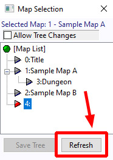
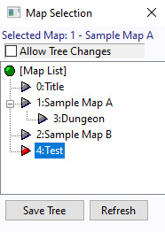

Even after creating the map, it may not
immediately appear in the Map Selection
window
to reload the map list.
The new map "4: Test" will appear
as shown on the right.
→ Creating a new Common Event
← Creating your first event

